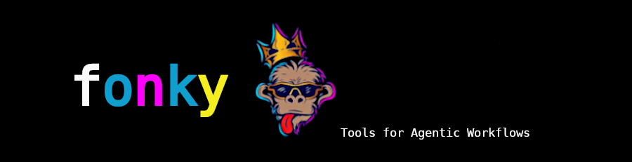

Overview

A reusable Python framework for data retrieval, document ingestion, and agent-ready tool
orchestration. Fonky provides a stable service layer for fetchers, scrapers, loaders, and
processing, plus a completed
fonky.tools package that exposes selected class methods as structured tools for ad-hoc
LangChain-style
agents, notebooks, web applications, FastAPI services, and other agentic workflows.
🎯 Purpose¶
Fonky provides a reusable library for:
| Capability | Description |
|---|---|
| 🌠Web Fetching | Retrieve web pages, scrape links, extract tables, headings, articles, paragraphs, |
| and image references | |
| 🔎 Search | Query Google Custom Search, Wikipedia, ArXiv, news APIs, and public research sources |
| 📄 Document Loading | Load and split text, PDF, CSV, Excel, Word, Markdown, HTML, PowerPoint, JSON, |
| XML, and web content | |
| ðŸ—ºï¸ Geospatial Tools | Geocode locations, reverse-geocode coordinates, validate addresses, retrieve |
| directions, and fetch weather | |
| ðŸ›°ï¸ Space / Science APIs | Access astronomy, satellite, NASA, USGS, EONET, and near-earth-object |
| data sources | |
| 🧠Agent Tools | Convert selected fetcher and loader methods into structured agent-callable tools |
| 🧾 Schema Export | Expose tool definitions for LangChain and provider-neutral tool-calling |
| workflows | |
| 🔠Serialization | Normalize outputs into JSON-safe tool results |
🧱 Architecture¶
Funky is divided into two layers.
🧩 Service Layer¶
The service layer contains ordinary Python classes.
🧰 Project Structure¶
Fonky/
README.md
requirements.txt
notebook/
fonkytown.ipynb
fonky/
__init__.py
config.py
core.py
fetchers.py
loaders.py
models.py
processors.py
scrapers.py
tools/
__init__.py
schemas.py
serializers.py
adapters.py
registry.py
fetcher_tools.py
loader_tools.py
notebook/
funkytown.ipynb
Examples:
from fonky.fetchers import WebFetcher, GoogleSearch, Wikipedia, ArXiv
from fonky.loaders import TextLoader, PdfLoader, CsvLoader, WebLoader
ðŸ› ï¸ Tool Layer¶
The tool layer adapts service-layer methods into agent-ready tools.
fonky.tools.schemas
fonky.tools.serializers
fonky.tools.adapters
fonky.tools.registry
fonky.tools.fetcher_tools
fonky.tools.loader_tools
Examples:
âš™ï¸ Installation¶
From the project root:
cd Funky
python -m venv .venv
.\.venv\Scripts\Activate.ps1
python -m pip install --upgrade pip
python -m pip install -r requirements.txt
- Install Playwright browser support:
🔠Environment Configuration¶
-
Funky reads credentials from environment variables through
fonky.config. -
Common variables:
OPENAI_API_KEY
GOOGLE_API_KEY
GOOGLE_CSE_ID
GOOGLE_WEATHER_API_KEY
GOOGLE_ACCOUNT_CREDENTIALS
GOOGLE_DRIVE_TOKEN_PATH
GOOGLE_DRIVE_FOLDER_ID
GEMINI_API_KEY
NASA_API_KEY
NASA_EARTHDATA_TOKEN
THENEWSAPI_API_KEY
MISTRAL_API_KEY
PINECONE_API_KEY
XAI_API_KEY
USER_AGENTS
- Example PowerShell setup:
$env:GOOGLE_API_KEY = "your-google-api-key"
$env:GOOGLE_CSE_ID = "your-google-custom-search-engine-id"
$env:GOOGLE_WEATHER_API_KEY = "your-google-weather-api-key"
$env:NASA_API_KEY = "your-nasa-api-key"
$env:THENEWSAPI_API_KEY = "your-thenewsapi-key"
- Credentials should remain in environment variables, configuration, or controlled dependency injection.
📓 Jupyter Notebook¶
- The included notebook is located at:
- Launch it from the project root:
- Or with classic Notebook:
- If the notebook cannot find the local package, add the project root to
sys.path:
from pathlib import Path
import sys
project_root = Path.cwd( ).parent if Path.cwd( ).name == "notebook" else Path.cwd( )
if str( project_root ) not in sys.path:
sys.path.insert( 0, str( project_root ) )
Ad Hoc AI Tool Examples¶
Create an OpenAI-compatible tool from TextLoader.load¶
from fonky.documents import TextLoader
from fonky.models import ToolDef
tool = ToolDef.from_method(
target=TextLoader( ),
method='load',
name='load_text_file',
category='documents'
)
schema = tool.to_openai( )
print( schema )
- Expected schema shape:
{
'type': 'function',
'function': {
'name': 'load_text_file',
'description': '...',
'parameters': {
'type': 'object',
'properties': {
'path': {
'type': 'string'
},
'encoding': {
'type': 'string',
'default': None
}
},
'required': [
'path'
]
},
'strict': True
}
}
Execute an ad hoc text-loader tool¶
from fonky.documents import TextLoader
from fonky.models import ToolDef
tool = ToolDef.from_method(
target=TextLoader( ),
method='load',
name='load_text_file',
category='documents'
)
result = tool.call(
{
'path': 'sample.txt',
'encoding': 'utf-8'
}
)
print( result[ 'ok' ] )
print( result[ 'name' ] )
print( result[ 'data' ][ 0 ][ 'page_content' ] )
- Expected result shape:
{
'ok': True,
'name': 'load_text_file',
'data': [
{
'page_content': '...',
'metadata': {
'source': 'sample.txt'
}
}
],
'error': None,
'metadata': {
'category': 'documents',
'source_module': 'fonky.loaders',
'source_class': 'TextLoader',
'method': 'load',
'callable_name': 'load'
}
}
Create an AI tool from PdfLoader.load¶
from fonky.documents import PdfLoader
from fonky.models import ToolDef
tool = ToolDef.from_method(
target=PdfLoader( ),
method='load',
name='load_pdf_file',
category='documents'
)
print( tool.parameters )
print( tool.to_openai( ) )
- Example call:
from fonky.documents import PdfLoader
from fonky.models import ToolDef
tool = ToolDef.from_method(
target=PdfLoader( ),
method='load',
name='load_pdf_file',
category='documents'
)
result = tool.call(
{
'path': 'sample.pdf',
'mode': 'single',
'extract': 'plain',
'include': False,
'format': 'markdown-img'
}
)
if result[ 'ok' ]:
print( result[ 'data' ][ 0 ][ 'page_content' ][ :1000 ] )
else:
print( result[ 'error' ] )
Create an AI tool from CsvLoader.load¶
from fonky.documents import CsvLoader
from fonky.models import ToolDef
tool = ToolDef.from_method(
target=CsvLoader( ),
method='load',
name='load_csv_file',
category='documents'
)
print( tool.parameters )
- Example call:
from fonky.documents import CsvLoader
from fonky.models import ToolDef
tool = ToolDef.from_method(
target=CsvLoader( ),
method='load',
name='load_csv_file',
category='documents'
)
result = tool.call(
{
'path': 'sample.csv',
'encoding': 'utf-8',
'source_column': None,
'delimiter': ',',
'quotechar': '"'
}
)
if result[ 'ok' ]:
print( result[ 'data' ][ 0 ][ 'page_content' ] )
else:
print( result[ 'error' ] )
Create an AI tool from WebExtractor.html_to_text¶
from fonky.web import WebExtractor
from fonky.models import ToolDef
tool = ToolDef.from_method(
target=WebExtractor( ),
method='html_to_text',
name='extract_html_text',
category='web'
)
print( tool.parameters )
print( tool.to_openai( ) )
- Example call:
from fonky.web import WebExtractor
from fonky.models import ToolDef
tool = ToolDef.from_method(
target=WebExtractor( ),
method='html_to_text',
name='extract_html_text',
category='web'
)
result = tool.call(
{
'html': '<html><body><p>Hello Fonky</p></body></html>'
}
)
print( result )
- Expected result shape:
{
'ok': True,
'name': 'extract_html_text',
'data': 'Hello Fonky',
'error': None,
'metadata': {
'category': 'web',
'source_module': 'fonky.scrapers',
'source_class': 'WebExtractor',
'method': 'html_to_text',
'callable_name': 'html_to_text'
}
}
Create an AI tool from ArXiv.fetch¶
from fonky.collections import ArXiv
from fonky.models import ToolDef
tool = ToolDef.from_method(
target=ArXiv( max_documents=2 ),
method='fetch',
name='search_arxiv',
category='collections'
)
print( tool.parameters )
print( tool.to_openai( ) )
- Example parameter schema:
{
'type': 'object',
'properties': {
'question': {
'type': 'string'
},
'max_documents': {
'type': 'integer',
'default': None
},
'full_documents': {
'type': 'boolean',
'default': None
},
'include_metadata': {
'type': 'boolean',
'default': None
}
},
'required': [
'question'
]
}
- Example call:
from fonky.collections import ArXiv
from fonky.models import ToolDef
tool = ToolDef.from_method(
target=ArXiv( max_documents=2 ),
method='fetch',
name='search_arxiv',
category='collections'
)
result = tool.call(
{
'question': 'large language model tool use',
'max_documents': 2,
'full_documents': False,
'include_metadata': True
}
)
if result[ 'ok' ]:
for document in result[ 'data' ]:
print( document[ 'metadata' ] )
print( document[ 'page_content' ][ :500 ] )
print( '-' * 100 )
else:
print( result[ 'error' ] )
Create an AI tool from Wikipedia.fetch¶
from fonky.collections import Wikipedia
from fonky.models import ToolDef
tool = ToolDef.from_method(
target=Wikipedia( language='en', max_documents=2 ),
method='fetch',
name='search_wikipedia',
category='collections'
)
print( tool.parameters )
print( tool.to_openai( ) )
- Example call:
from fonky.collections import Wikipedia
from fonky.models import ToolDef
tool = ToolDef.from_method(
target=Wikipedia( language='en', max_documents=2 ),
method='fetch',
name='search_wikipedia',
category='collections'
)
result = tool.call(
{
'question': 'retrieval augmented generation',
'language': 'en',
'max_documents': 2,
'include_metadata': True
}
)
if result[ 'ok' ]:
for document in result[ 'data' ]:
print( document[ 'metadata' ] )
print( document[ 'page_content' ][ :500 ] )
print( '-' * 100 )
else:
print( result[ 'error' ] )
Export a tool to provider formats¶
from fonky.documents import TextLoader
from fonky.models import ToolDef
tool = ToolDef.from_method(
target=TextLoader( ),
method='load',
name='load_text_file',
category='documents'
)
openai_tool = tool.to_openai( )
gemini_tool = tool.to_gemini( )
grok_tool = tool.to_grok( )
print( openai_tool )
print( gemini_tool )
print( grok_tool )
Create an AI tool from a plain Python function¶
ToolDef can also wrap ordinary Python functions.
from fonky.models import ToolDef
def add_numbers( left: int, right: int ) -> int:
'''
Purpose:
--
Add two integers.
Parameters:
--
left (int): Left integer.
right (int): Right integer.
Returns:
--
int: Sum of left and right.
'''
return left + right
tool = ToolDef.from_callable(
function=add_numbers,
name='add_numbers',
category='utility'
)
print( tool.parameters )
result = tool.call(
{
'left': 2,
'right': 3
}
)
print( result )
- Expected result shape:
{
'ok': True,
'name': 'add_numbers',
'data': 5,
'error': None,
'metadata': {
'category': 'utility',
'source_module': '__main__',
'source_class': None,
'method': None,
'callable_name': 'add_numbers'
}
}
Handle tool-call failures¶
- When the underlying callable fails,
ToolDef.call(...)returns a structured failure envelope.
from fonky.documents import TextLoader
from fonky.models import ToolDef
tool = ToolDef.from_method( target=TextLoader( ),
method='load',
name='load_text_file',
category='documents'
)
result = tool.call(
{
'path': 'missing-file.txt'
}
)
print( result[ 'ok' ] )
print( result[ 'error' ] )
Expected shape:
{
'ok': False,
'name': 'load_text_file',
'data': None,
'error': {
'type': 'Error',
'message': '...'
},
'metadata': {
'category': 'documents',
'source_module': 'fonky.loaders',
'source_class': 'TextLoader',
'method': 'load',
'callable_name': 'load'
}
}
🧾 Requirements¶
| Package | Purpose | Notes |
|---|---|---|
pydantic |
Defines structured models and tool input schemas | Required for |
models.py and tools/schemas.py |
||
typing_extensions |
Backports newer typing features | Useful for compatibility across |
| Python versions | ||
requests |
HTTP client for API fetchers | Required by most fetchers |
pandas |
DataFrame handling and tabular data processing | Used for |
| structured data and loader outputs | ||
numpy |
Numeric processing | Common dependency for data workflows |
python-dateutil |
Date parsing and date utilities | Useful for API date parameters |
| and notebooks | ||
langchain |
Main LangChain framework | Required for agent/tool workflows |
langchain-core |
Core LangChain abstractions | Required for Document, tools, and |
| retrievers | ||
langchain-community |
Community loaders and retrievers | Required by many loader/fetcher |
| wrappers | ||
langchain-text-splitters |
Document chunking | Required for recursive text splitting |
langchain-google-community |
Google community integrations | Used by Google loaders |
langchain-googledrive |
Google Drive retriever support | Used by Google Drive tools |
pypdf |
PDF parsing | Required by PDF loaders |
docx2txt |
Word document extraction | Required by DOCX loaders |
openpyxl |
Excel .xlsx support |
Required for Excel workflows |
xlrd |
Legacy Excel .xls support |
Optional but useful |
python-pptx |
PowerPoint document support | Used by PowerPoint loaders |
unstructured |
Parses Office, HTML, Markdown, and mixed document formats | Heavy |
| dependency; useful for full document support | ||
lxml |
XML/HTML parsing | Required by XML and HTML workflows |
beautifulsoup4 |
HTML parsing and scraping | Required by web scraping methods |
html5lib |
HTML parser backend | Useful with BeautifulSoup and document |
| loaders | ||
markdown |
Markdown parsing | Useful for Markdown loader workflows |
nbformat |
Jupyter notebook parsing | Required for notebook loader support |
pillow |
Image handling | Required by image and OCR-related loaders |
rapidocr-onnxruntime |
OCR fallback for PDFs/images | Useful for image-heavy PDFs |
playwright |
Browser automation/rendering | Requires browser installation |
crawl4ai |
Web crawling/rendering support | Useful for dynamic pages |
arxiv |
ArXiv API support | Required by ArXiv retrieval |
wikipedia |
Wikipedia API support | Required by Wikipedia retrieval |
xmltodict |
XML-to-dictionary conversion | Useful for API and XML workflows |
google-genai |
Gemini / Google GenAI SDK | Required for Gemini-oriented |
| workflows | ||
google-api-python-client |
Google API client support | Useful for Google Drive and other |
| Google APIs | ||
google-auth |
Google authentication | Required for Google API access |
google-auth-oauthlib |
OAuth support for Google services | Required for user-authenticated |
| Google workflows | ||
google-cloud-storage |
Google Cloud Storage support | Required by GCS loaders |
google-cloud-speech |
Google Speech-to-Text support | Required by speech loaders |
boto3 |
AWS SDK | Required by S3 file/directory loaders |
botocore |
Low-level AWS dependency | Installed with boto3, but can be |
| pinned explicitly | ||
astropy |
Astronomy coordinate and data tools | Required by astronomy |
| fetchers | ||
astroquery |
Astronomy data queries | Required by SIMBAD / astronomy workflows |
sscws |
NASA SSC Web Services client | Required by satellite center tools |
OWSLib |
Web Map Service support | Required by WMS/global imagery |
| workflows | ||
cartopy |
Geospatial mapping/projections | Heavy dependency; needed for map |
| rendering | ||
matplotlib |
Plotting and map rendering | Required by imagery/geospatial |
| rendering | ||
grokipedia-api |
Grokipedia client support | Required only when Grokipedia tools are |
| enabled | ||
boogr |
Custom error wrapper used by service classes | Keep as local |
package/module or replace with fonky.errors |
📠License¶
- Fonky is published under
 the MIT General Public License v3.
the MIT General Public License v3.